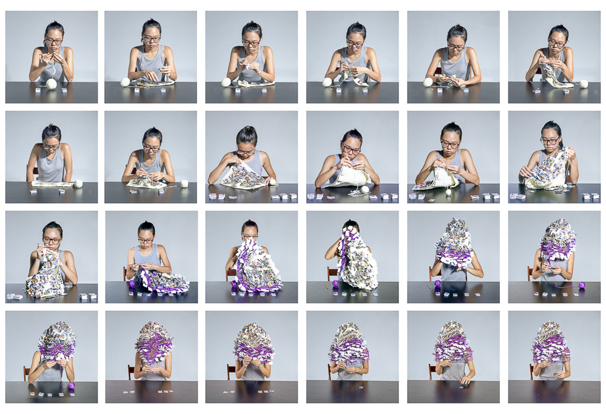
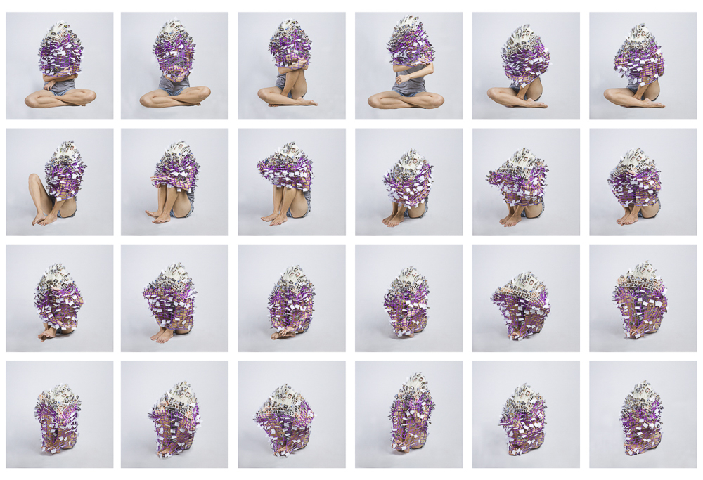
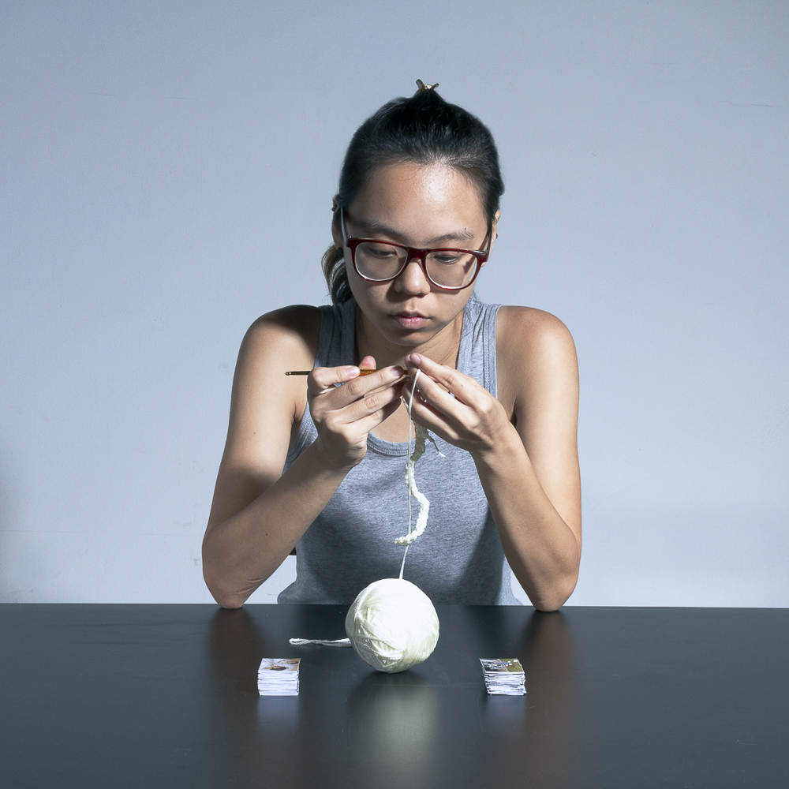
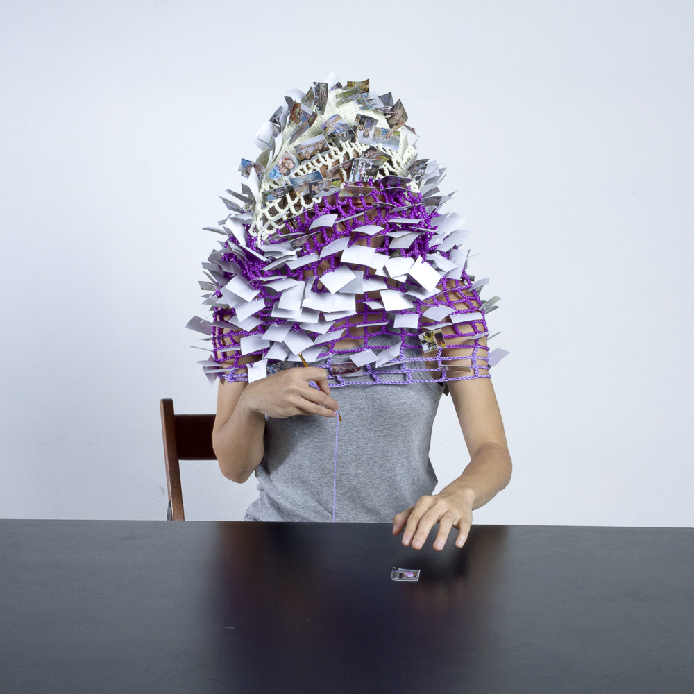

丝 Tangling explores the complexities of father-daughter relationships. Often, parents are as clueless as their children in fulfilling their parental duties and roles. Misguided, all these expressions of affection accumulate into a stasis where the protective intentions and restrictive effects become counter-productive.
With the benefit of hindsight, can one recognise the efforts and attempts to express love and decode these correctly? How long does it take before either party can realise this? How does this realization change the relationship?